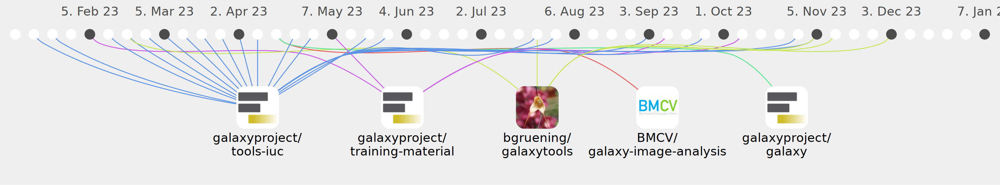

tuncK

Commits all-time: 109
Commits last year: 99

(78)
- e0ce865
- a14db40
- 30506bd
- 5356a58
- 733c7d4
- 66a80b8
- 7dffbb6
- 62c85bb
- 41eec97
- 86c2be3
- 3ca8f05
- 5b4fca8
- e3dd888
- 76cf263
- bec6cd8
- 8b69515
- 008e4f2
- b15c436
- 0dcc315
- ed8f7d0
- 69bc517
- 0ef45e4
- 459ba21
- 588a9ef
- 4ff645f
- c4de007
- 0b79897
- bd2525f
- 209a95b
- 7e769bd
- 56b1407
- 588ab8b
- 8c33023
- d95c5a7
- 05cd64d
- 2eeb773
- de1976e
- c53c722
- 5102dca
- d75597e
- c40b17e
- a18f83c
- d8cadd4
- 57df6e8
- 7115986
- 88e16c9
- f02b46e
- e246374
- b7f71a3
- dd66593
- c166f3d
- 431b3ed
- e35510e
- f45a88f
- ccfe0f4
- b802396
- 9271ad5
- d9038dd
- 3a09144
- 4b28ccb
- 6a6799c
- 2e9cafc
- dff5025
- 3a66c5d
- b80b93d
- 4a40c0e
- b7849b5
- 469558d
- e53aabd
- 7b34547
- ee49455
- e96d737
- 795c9cc
- 6ab7679
- 4560f5c
- 3d583f8
- cfa942e
- ebbb4da
(11)
(5)
(4)
(1)